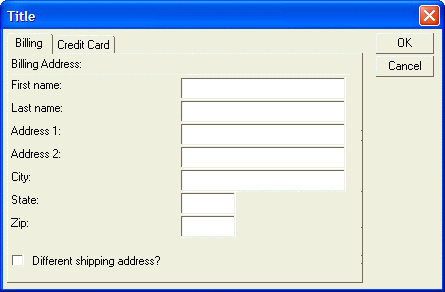
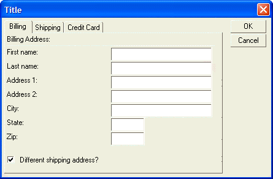
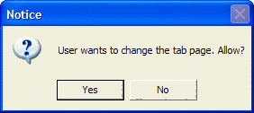

Conditionally Displaying Panes on a Tab Control
The panes in a tab control can be turned on and off, depending on whether a condition is true.
To conditionally show a pane in a tab control, use the following syntax for the tab control:
{tab=variable_name!event_name} {pane=Pane1 Description?condition1} |
Xdialog code for first page of tab control
{pane=Pane2 Description?condition2} |
Xdialog code for second page of tab control
{pane=Pane'n' Description?condition'n'} |
Xdialog code for 'N'th page of tab control
{endtab} |
For example, the following script displays a dialog with a tab control. If the user checks the 'Different shipping address?' check box, then a new tab, called 'Shipping' is displayed. When the user clicks on a different tab, a ui_msg_box()pops up, demonstrating how the tab change event can be trapped.
dim a_card_type[100] as C dim a_expire_month[12] as C x = "American Express,Visa,Master Card,Discover" a_card_type.initialize( stritran(x,",",crlf() ) ) x = "01,02,03,04,05,06,07,08,09,10,11,12" a_expire_month.initialize( stritran(x,",",crlf() ) ) dim a_expire_year[10] as C x = "2000,2001,2002,2003,2004,2005,2006,2007,2008,2009" a_expire_year.initialize( stritran(x,",",crlf() ) ) shipping_flag = .f. page = "Billing" old_tab = page result = ui_dlg_box("Title",<<%dlg% {tab=page!page_change} {pane=Billing} {region1} Billing Address:; {line=2,0}; First name:| [.32firstname] ; Last name:| [.32lastname] ; Address 1:| [.32address1] ; Address 2:| [.32address2] ; City:| [.32City] ; State:| [State] ; Zip:| [Zip]; {lf}; (shipping_flag) Different shipping address?; {endregion1}; {pane=Shipping?shipping_flag} {region} Shipping Address:; {line=2,0}; First name:| [.32firstname] ; Last name:| [.32lastname] ; Address 1:| [.32address1] ; Address 2:| [.32address2] ; City:| [.32City] ; State:| [State] ; Zip:| [Zip] {endregion}; {pane=Credit Card} {region} Card Type:| [.32card_type^=a_card_type] ; Card Number:| [.32card_number] ; Expiration:| [.4expiry_month^=a_expire_month] [.5expiry_year^=a_expire_year] ; {endregion}; {endtab}| {Region3} <10&OK>; <10&Cancel>; {Endregion3} %dlg%,<<%code% if a_dlg_button = "page_change" then a_dlg_button = "" question = ui_msg_box("Notice","User wants to change the tab page. Allow?", ui_yes_no + ui_question_symbol) if question = ui_no_selected then page = old_tab else old_tab = page end if end if %code%) |
The above script creates this dialog:

Lesson 8: Tab Control - Conditional Panes and Tab Events
When the user clicks the check box, the 'Shipping' tab appears:

Lesson 8: Tab Control - Conditional Panes and Tab Events
When the user tries to navigate to a new tab, the following UI_MSG_BOX() appears:

In the above script notice that the command to define the Shipping pane is:
{pane=Shipping?shipping_flag} |
When the dialog is opened, the shipping_flag is initially set to .F., so the Shipping pane is not shown. When the user clicks the check box on the Billing pane, the shipping_flag is set to .T., and so the pane is displayed.
The tab control is defined using the command:
{tab=page!page_change} |
Whenever the user changes panes on the tab control, and event called page_change is generated. The following event handling code handles this event:
1. if a_dlg_button = "page_change" then 2. a_dlg_button = "" 3. question = ui_msg_box("Notice","User wants to change the tab page. Allow?",ui_yes_no+ui_question_symbol) 4. if question = ui_no_selected then 5. page = old_tab 6. else 7. old_tab = page 8. end if 9. end if |
In line 3, a message box is opened when the user tries to change tabs. If the user click 'No' on the message box, then question is equal to ui_no_selected and page is set to old_tab. old_tab is a variable that contains the name of pane that had focus before the user tried to change panes. So, the user stays on the current pane.
If, on the other hand, the user selects 'Yes', then old_tab is set to the tab pane to which the user is switching.
Note that old_tab is initialized to 'Billing' before the dialog is opened. (i.e. before the UI_DLG_BOX()command).
Next
Supported By
Alpha Five Version 5 and Above
Limitations
Desktop applications only.